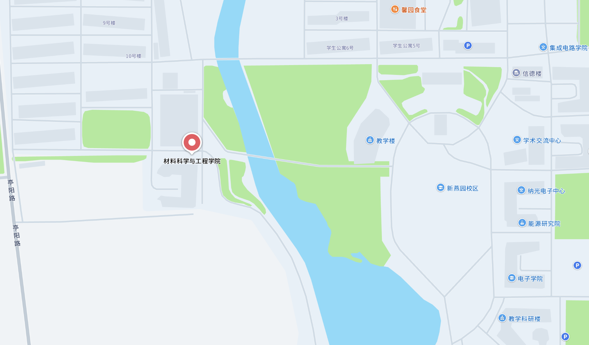

博士后Postdoctoral Fellows
材料、物理、化学、电子工程、人工智能或相关背景；能够独立推进前沿课题，并参与学生指导与合作项目。Background in materials, physics, chemistry, electronic engineering, artificial intelligence or related fields; able to lead frontier projects and mentor students.
Open Positions
材料、物理、化学、电子工程、人工智能或相关背景；能够独立推进前沿课题，并参与学生指导与合作项目。Background in materials, physics, chemistry, electronic engineering, artificial intelligence or related fields; able to lead frontier projects and mentor students.
对光电材料、探测器件、智能感知、机器人系统或人工智能感兴趣，愿意持续投入研究，
并在科研实践中培养严谨的思维与解决问题的能力。Interest in optoelectronic materials, detectors, intelligent sensing, robotics or artificial intelligence, with a commitment to sustained research and rigorous problem-solving.
希望参与真实科研项目，在实践中训练实验、数据分析和学术表达能力。Students seeking hands-on training in experiments, data analysis and scientific communication.
Research & Support
